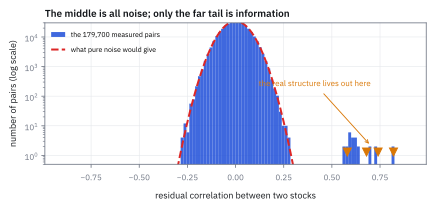
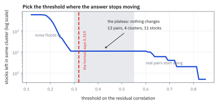
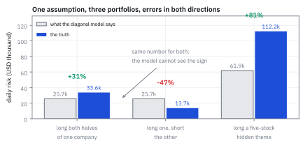
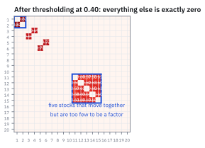

27.4 The Idiosyncratic Covariance Matrix and Off-Diagonal Clustering
แบบจำลองบอกว่านอกแนวทแยงเป็นศูนย์ ซึ่งจริง 98% และผิดร้ายแรง 2%
พอร์ตหนึ่ง long หุ้นสองชั้นราคาของบริษัทเดียวกัน อีกพอร์ต long ตัวหนึ่ง short อีกตัว ข้างละ \$1 ล้าน แบบจำลองที่ถือว่า idiosyncratic ไม่สัมพันธ์กัน บอกว่าเสี่ยงเท่ากันที่ \$25,663 ต่อวัน จริงไหม?
เฉลย: พอร์ตแรก \$33,621 ซึ่งสูงกว่าที่บอก 31% ส่วนพอร์ตที่สอง \$13,669 ซึ่ง ต่ำ กว่าที่บอก 88% แบบจำลองผิดคนละทิศกับสองพอร์ตที่ถือหุ้นคู่เดียวกัน และความผิดแบบที่สองแพงกว่า เพราะมันบอกว่าการเทรดที่ปลอดภัยที่สุดอันหนึ่งเป็นการเทรดที่เสี่ยง แล้วห้ามไม่ให้ทำในขนาดที่ควรทำ
ศัพท์ที่ใช้ในหัวข้อนี้
- idiosyncratic covariance matrix
- covariance matrix ของส่วนที่ factor อธิบายไม่ได้ ใหญ่เท่าจำนวนหุ้นยกกำลังสอง ใช้เป็นก้อนที่ใหญ่ที่สุดในแบบจำลอง
- strict factor model
- แบบจำลองที่สมมติว่า idiosyncratic ของหุ้นต่างตัวไม่สัมพันธ์กันเลย ใช้เป็นสมมติฐานตั้งต้นที่หัวข้อนี้ผ่อน
- approximate factor model
- แบบจำลองที่ยอมให้ idiosyncratic สัมพันธ์กันได้บ้างในบางคู่ ใช้เป็นสิ่งที่ระบบจริงใช้
- thresholding
- การตัด correlation ที่เล็กกว่าเกณฑ์ทิ้งเป็นศูนย์ ใช้แยกโครงสร้างจริงออกจากเสียงรบกวน
- cluster
- กลุ่มหุ้นที่เชื่อมถึงกันด้วย correlation ที่รอดเกณฑ์ ใช้เป็นสิ่งที่ต้องตรวจด้วยตาว่าสมเหตุสมผลไหม
- share class
- หุ้นคนละชั้นของบริษัทเดียวกัน เช่นที่มีสิทธิออกเสียงต่างกัน ใช้เป็นตัวอย่างที่ชัดที่สุดของ correlation ที่เหลืออยู่
- dual listing
- บริษัทเดียวกันที่จดทะเบียนในสองตลาด ใช้เป็นอีกกรณีที่ผลตอบแทนเหลือสัมพันธ์กันสูง
- pervasive factor
- แรงร่วมที่กระทบหุ้นจำนวนมากพอจะตรวจจับได้จากภาพตัดขวาง ใช้เป็นเกณฑ์ว่าอะไรควรเป็น factor
- sparse matrix
- matrix ที่ช่องส่วนใหญ่เป็นศูนย์ ใช้เป็นรูปที่ต้องการของ covariance matrix ก้อนนี้
- spurious correlation
- ความสัมพันธ์ที่วัดได้แต่ไม่มีอยู่จริง เกิดจากข้อมูลจำกัด ใช้เป็นสิ่งที่เกณฑ์ตัดออก
- connected component
- กลุ่มของสิ่งที่เดินถึงกันได้ผ่านเส้นเชื่อม ใช้เป็นนิยามของ cluster ในหัวข้อนี้
- exponential weighting
- การให้น้ำหนักข้อมูลเก่าลดลงทีละคูณคงที่ ใช้ประมาณ idiosyncratic variance รายตัว
- shrinkage
- การดึงค่าที่ประมาณได้เข้าหาค่าเฉลี่ยรวม ใช้กับ idiosyncratic variance ของหุ้นที่ข้อมูลน้อย
สัญลักษณ์ที่ใช้ในหัวข้อนี้
| สัญลักษณ์ | ความหมาย | หน่วย |
|---|---|---|
| $\boldsymbol\epsilon_t$ | idiosyncratic return ของหุ้นทุกตัวในวัน t | decimal |
| $\boldsymbol\Omega_\epsilon$ | covariance matrix ของมัน ขนาด $n\times n$ | decimal² |
| $\rho_{i,j}$ | correlation ระหว่าง idiosyncratic ของหุ้น i กับ j | unitless |
| $\lambda$ | เกณฑ์ที่ใช้ตัด correlation ทิ้ง | unitless |
| $\hat\sigma_i$ | idiosyncratic volatility ของหุ้น i | decimal |
| $\mathbf w$ | สถานะของพอร์ต | USD |
| $n,\ T$ | จำนวนหุ้น และจำนวนวันที่ใช้ประมาณ | จำนวน |
| $K$ | ค่าคงที่ในสูตรเกณฑ์เชิงทฤษฎี | unitless |
| $\tau$ | half-life ที่ใช้ประมาณ idiosyncratic variance | วันทำการ |
ที่มาที่ไป: ก้อนที่ใหญ่ที่สุดและถูกดูแลน้อยที่สุด
ในพอร์ตที่กระจายดี idiosyncratic กินความเสี่ยงไป 50 ถึง 90% ตามที่หัวข้อ 26.1 คำนวณไว้ แต่เวลาส่วนใหญ่ของการสร้างแบบจำลองหมดไปกับ factor ซึ่งเป็นก้อนเล็กกว่า
เหตุผลคือก้อนนี้ดูเหมือนง่าย แบบจำลองบอกว่ามันเป็น diagonal จึงเหลือแค่ต้องประมาณ variance รายตัว ซึ่งใช้ exponential weighting แบบเดียวกับหัวข้อ 25.5 จบ
ปัญหาคือคำว่า diagonal นั้นจริงประมาณ 98% ของคู่ทั้งหมด และผิดอย่างร้ายแรงในอีก 2% ที่เหลือ และ 2% นั้นไม่ได้กระจายสุ่ม มันกระจุกอยู่ในคู่ที่คนเทรดมากที่สุด เช่นหุ้นสองชั้นราคาของบริษัทเดียวกัน
โจทย์: หุ้น 600 ตัว หนึ่งปี และโครงสร้างที่ซ่อนอยู่
โจทย์ให้อะไรมาบ้าง idiosyncratic return ของหุ้น 600 ตัวตลอด 251 วัน idiosyncratic volatility รายตัวอยู่ระหว่าง 1.2% ถึง 3.2% ต่อวัน ในความจริงมีสามคู่ที่สัมพันธ์กันสูงคือ 0.82 0.74 และ 0.68 ซึ่งเป็นหุ้นสองชั้นราคาของบริษัทเดียวกัน และมีอีกกลุ่มห้าตัวที่สัมพันธ์กันที่ 0.58 ซึ่งเป็นธีมเล็กที่ไม่ใหญ่พอจะเป็น factor
ต้องหาสี่อย่าง หน้าตาของ correlation ที่วัดได้เทียบกับเสียงรบกวนล้วน ๆ เกณฑ์ที่ควรใช้ตัด สิ่งที่โผล่ออกมาเมื่อตัดถูก และราคาที่จ่ายถ้าไม่ทำอะไรเลย
ขั้นที่ 1 — แนวทแยงก่อน เพราะนั่นคือ 98% ของงาน
นี่คือนิยามของการประมาณ variance รายตัว ใช้ exponential weighting บน idiosyncratic return ที่ได้จากหัวข้อ 27.1 แล้วดึงเข้าหาค่าเฉลี่ยรวมเล็กน้อยสำหรับหุ้นที่ข้อมูลน้อย
สำหรับ matrix ที่เป็น diagonal การดึงเข้าหาเป้าคือการดึง variance ของหุ้นแต่ละตัวเข้าหาค่าเฉลี่ยของทุกตัว ซึ่งช่วยมากกับหุ้นที่เพิ่งเข้าตลาดหรือเพิ่งกลับมาซื้อขาย เพราะข้อมูลของมันน้อยและค่าที่วัดได้เหวี่ยง
กลไกในหัวข้อ 27.3 ใช้ได้ที่นี่ด้วย แต่ต้องใส่หน้าต่างรอบวันประกาศผลประกอบการ ไม่อย่างนั้นวันที่บริษัทใหญ่ประกาศผล ความเสี่ยงของหุ้นทุกตัวในตลาดจะถูกดันขึ้นโดยไม่มีเหตุผล
ขั้นที่ 2 — นอกแนวทแยงเกือบทั้งหมดคือเสียงรบกวน
วัด correlation ของ idiosyncratic ทุกคู่จากข้อมูล 251 วัน แล้วเทียบกับค่าที่จะได้ถ้าทุกคู่เป็นอิสระต่อกันจริง ๆ ซึ่งมีความเหวี่ยงราวหนึ่งส่วนรากที่สองของจำนวนวัน
ตัวเลข 1.008 คือสิ่งที่ควรสังเกต การกระจายตัวของ correlation ทั้ง 179,700 คู่แทบเท่ากับที่เสียงรบกวนล้วน ๆ จะให้ ถ้าดูแค่ค่าเฉลี่ยกับความเหวี่ยง จะสรุปว่าไม่มีโครงสร้างอะไรเลย
แต่ค่าสูงสุดที่ 0.8168 หักล้างข้อสรุปนั้นทันที ถ้าทุกคู่เป็นอิสระจริง ค่าสูงสุดของ 179,700 คู่ควรอยู่ราว 4.5 เท่าของความเหวี่ยง คือราว 0.28 ไม่ใช่ 0.82
บทเรียนคือ โครงสร้างที่มีอยู่ซ่อนอยู่ในหางของ distribution ไม่ใช่ในตัวกลาง จึงต้องมองที่หาง และนั่นคือเหตุผลที่วิธีที่ใช้คือการตัดด้วยเกณฑ์ ไม่ใช่การปรับค่าทั้งกอง
Figure 27.4a — เกือบทั้งหมดคือเสียงรบกวน ยกเว้นหางขวาสุด

histogram ของ correlation ทั้ง 179,700 คู่ บนสเกล logarithm ในแนวตั้ง เส้นโค้งคือรูปที่เสียงรบกวนล้วน ๆ จะให้ ซึ่งทับกับข้อมูลเกือบสนิทตลอดตัวกลาง จุดที่แยกกันคือหางขวาสุด ซึ่งมีอยู่ไม่กี่สิบคู่ และนั่นคือทั้งหมดที่เราตามหา
ขั้นที่ 3 — เกณฑ์ไหน และรู้ได้อย่างไรว่าถูก
ทฤษฎีให้เกณฑ์ที่ขึ้นกับจำนวนหุ้นและจำนวนวัน แต่ในทางปฏิบัติวิธีที่ดีกว่าคือลองหลายค่าแล้วดูว่าค่าไหนทำให้กลุ่มที่ได้นิ่ง
คำตอบอ่านได้จากตารางโดยไม่ต้องใช้ทฤษฎีเลย ระหว่าง 0.30 ถึง 0.55 ผลลัพธ์เหมือนกันเป๊ะทุกค่า 13 คู่ 4 กลุ่ม 11 หุ้น นั่นคือที่ราบที่บอกว่าเราเจอโครงสร้างจริงแล้ว
ที่ 0.20 ได้ 369 หุ้นซึ่งคือ 61.5% ของตลาด ซึ่งเป็นไปไม่ได้ นั่นคือเสียงรบกวนที่หลุดเกณฑ์เข้ามา ที่ 0.70 เหลือแค่ 2 คู่ ซึ่งแปลว่าเริ่มตัดของจริงทิ้ง
เกณฑ์เชิงทฤษฎีที่ 0.3193 ตกอยู่กลางที่ราบพอดี ซึ่งเป็นเรื่องน่ายินดี แต่วิธีที่ควรใช้จริงคือดูที่ราบ เพราะค่าคงที่ K ในสูตรไม่มีใครรู้ว่าควรเป็นเท่าไร
ตรวจเองใน 10 วินาที จำนวนคู่ทั้งหมดคือ 600 × 599 หาร 2 ซึ่งได้ 179,700 คู่ ถ้าเหลือ 13 คู่ นั่นคือ 0.007% ของทั้งหมด ซึ่งฟังดูสมเหตุสมผลสำหรับ “หุ้นสองชั้นราคาและธีมเล็ก ๆ ในตลาด 600 ตัว”
Figure 27.4b — ที่ราบคือคำตอบ ไม่ใช่สูตร

แกนนอนคือเกณฑ์ที่ใช้ตัด แกนตั้งคือจำนวนหุ้นที่ยังอยู่ในกลุ่มใดกลุ่มหนึ่ง ทางซ้ายตัวเลขระเบิดเพราะเสียงรบกวนหลุดเข้ามา ทางขวาตกลงเพราะเริ่มตัดของจริง ตรงกลางมีที่ราบกว้างตั้งแต่ 0.30 ถึง 0.55 ที่ตัวเลขไม่ขยับเลย เส้นประคือเกณฑ์เชิงทฤษฎีซึ่งตกในที่ราบพอดี
แล้วเอาไปใช้ทำอะไรได้จริงบ้าง
เมื่อได้กลุ่มมาแล้ว ขั้นที่สำคัญที่สุดคือเปิดดูด้วยตาว่ามันคือหุ้นอะไรบ้าง ถ้าเป็นหุ้นสองชั้นราคาของบริษัทเดียวกัน หรือบริษัทที่จดทะเบียนสองตลาด นั่นคือของจริงและอธิบายได้ ถ้าเป็นหุ้นที่ไม่มีอะไรเกี่ยวข้องกันเลย นั่นคือสัญญาณว่าเกณฑ์ยังหลวมเกินไป
บนโต๊ะจริงมีคำถามต่อว่าจะทำอย่างไรกับกลุ่มที่เจอ มีสองทาง ทางแรกคือใส่ correlation เข้าไปใน covariance matrix ตรง ๆ ทางที่สองคือเพิ่ม factor ใหม่ที่จับกลุ่มนั้น เช่น factor สำหรับ share class ซึ่งเป็นการ push-out ตามหัวข้อ 26.3 ทางที่สองดีกว่าเมื่อกลุ่มใหญ่พอและเกิดซ้ำ
ขั้นที่ 4 — ราคาที่จ่ายถ้าไม่ทำอะไรเลย
ใช้คู่แรกในโจทย์ ซึ่งมี idiosyncratic volatility 1.30% กับ 2.21% ต่อวัน และ correlation จริง 0.82 คำนวณความเสี่ยงของสามพอร์ตด้วยสองแบบจำลอง
สังเกตว่าแบบจำลองที่เป็น diagonal ให้ตัวเลขเดียวกันคือ \$25,663 ทั้งกับพอร์ตที่ long ทั้งคู่และพอร์ตที่ long กับ short เพราะมันไม่รู้จักเครื่องหมาย ความจริงต่างกันสองเท่าครึ่ง
บรรทัดที่สองคือความผิดที่แพงที่สุด พอร์ตที่ long ตัวหนึ่ง short อีกตัวของบริษัทเดียวกัน คือการเทรดส่วนต่างราคาซึ่งเป็นการเทรดที่ปลอดภัยที่สุดอันหนึ่งที่มี แต่แบบจำลองบอกว่ามันเสี่ยงเกือบสองเท่าของความจริง optimizer จึงสั่งทำในขนาดครึ่งเดียวของที่ควร กำไรที่หายไปไม่มีใครเห็น
บรรทัดที่สามคือความผิดที่อันตรายที่สุด ธีมห้าตัวที่ไม่ใหญ่พอจะเป็น factor ทำให้ความเสี่ยงจริงสูงกว่าที่รายงาน 81.4% ถ้าพอร์ตบังเอิญมีธีมแบบนั้นหลายธีม ความเสี่ยงรวมที่รายงานจะต่ำเกินจริงมาก และจะไม่มีใครรู้จนกว่าจะขาดทุน
Figure 27.4c — แบบจำลองเดียวกัน สามพอร์ต ผิดคนละทิศ

สามคู่แท่ง แต่ละคู่คือความเสี่ยงที่แบบจำลองแนวทแยงรายงาน เทียบกับความจริง พอร์ตแรกกับพอร์ตที่สามถูกประเมินต่ำเกินไป พอร์ตที่สองซึ่งคือการเทรดส่วนต่างราคาถูกประเมินสูงเกินไปเกือบเท่าตัว สังเกตว่าสองแท่งซ้ายของพอร์ตแรกกับที่สองเท่ากัน เพราะแบบจำลองไม่รู้จักเครื่องหมาย
Figure 27.4d — ตัดแล้วเปิดดู: กลุ่มที่โผล่ออกมา

correlation matrix ของหุ้น 20 ตัวแรกหลังตัดที่ 0.40 ช่องสีคือคู่ที่รอด สามคู่แรกคือหุ้นสองชั้นราคาของบริษัทเดียวกัน และบล็อกห้าคูณห้าคือธีมที่ไม่ใหญ่พอจะเป็น factor ที่เหลือว่างหมด นี่คือภาพที่ควรเห็นทุกครั้งก่อนเชื่อผลจากการตัด
กับดัก: ตั้งเกณฑ์ต่ำเพื่อ “ไม่ให้พลาดอะไร” และลืมตรวจว่า matrix ยังใช้ได้
กับดักแรกคือตั้งเกณฑ์ต่ำด้วยเหตุผลว่าดีกว่าจับเกินกว่าจับขาด ที่เกณฑ์ 0.20 ในโจทย์นี้ได้หุ้นมา 369 ตัวซึ่งคือ 61.5% ของตลาด แทบทั้งหมดเป็นเสียงรบกวน ผลคือ covariance matrix ที่เต็มไปด้วยความสัมพันธ์ปลอม ซึ่งแย่กว่าการไม่มีอะไรเลย เพราะ optimizer จะไปหาพอร์ตที่ใช้ประโยชน์จากความสัมพันธ์ที่ไม่มีอยู่จริง
กับดักที่สองคือใส่ correlation เข้าไปแล้วไม่ตรวจว่า matrix ยัง positive definite อยู่ไหม การเติมค่านอกแนวทแยงเข้าไปทีละคู่ไม่รับประกันเรื่องนี้เลย และถ้ามันไม่ positive definite จะมีพอร์ตที่ความเสี่ยงคำนวณได้ติดลบ ซึ่งทำให้ optimizer ระเบิด ต้องตรวจทุกครั้งหลังเปลี่ยนเกณฑ์
กับดักที่สามคือไม่ตัดสินใจเรื่องจักรวาลก่อน ถ้ากลยุทธ์ตั้งใจเทรดส่วนต่างราคาระหว่างหุ้นสองชั้นราคา ต้องมีทั้งสองตัวในแบบจำลองและต้องใส่ correlation ให้ถูก แต่ถ้ากลยุทธ์แค่ลงทุนในบริษัทตามพื้นฐาน ควรเลือกมาตัวเดียวคือตัวที่สภาพคล่องดีที่สุด แล้วปัญหาหายไปเอง การตัดสินใจนี้ต้องมาก่อนการปั้นแบบจำลอง ไม่ใช่หลัง
ข้อจำกัด: สองทางจัดการกับกลุ่มที่เจอ
| เรื่อง | ใส่ correlation ตรง ๆ | เพิ่ม factor ใหม่ | เลือกอย่างไร |
|---|---|---|---|
| ขนาดของกลุ่ม | ดีสำหรับคู่หรือกลุ่มเล็ก | ดีเมื่อกลุ่มมีสิบตัวขึ้นไป | factor ต้องกระทบหุ้นมากพอจะตรวจจับได้จากภาพตัดขวาง |
| ความคงทน | ต้องประมาณใหม่ทุกช่วง | loading คงที่ถ้าเป็นการจัดประเภท | ถ้ากลุ่มเกิดจากโครงสร้างบริษัท ใช้ factor |
| ผลต่อรายงาน | ไม่กระทบ ยังเป็น idiosyncratic | PnL ย้ายจาก idiosyncratic ไปเป็น factor | ถ้าอยากให้ PnL นั้นนับเป็นฝีมือเลือกหุ้น อย่าทำเป็น factor |
| ความเสี่ยงที่ตามมา | อาจทำให้ matrix ไม่ positive definite | เพิ่มมิติให้ปัญหา และอาจซ้ำกับ factor เดิม | ทางแรกตรวจ eigenvalue ทางที่สองต้องทำ push-out ให้ถูก |
แถวที่สามเป็นเรื่องที่คนมองข้าม ถ้าเปลี่ยนกลุ่มหุ้นให้เป็น factor กำไรจากการเทรดกลุ่มนั้นจะกลายเป็น factor PnL ทันที และหายไปจากตัวเลขที่ใช้วัดฝีมือในหัวข้อ 26.6 ซึ่งอาจไม่ใช่สิ่งที่ต้องการ
ตรวจทุกตัวเลขของหัวข้อนี้
import collections
import numpy as np
rng = np.random.default_rng(29)
n, T = 600, 251
se = rng.uniform(0.012, 0.032, n)
pairs = [(0, 1, 0.82), (2, 3, 0.74), (4, 5, 0.68)] # dual share classes
theme = [10, 11, 12, 13, 14] # too small to be a factor
C = np.eye(n)
for i, j, r in pairs:
C[i, j] = C[j, i] = r
for a in theme:
for b in theme:
if a != b:
C[a, b] = 0.58
E = (np.linalg.cholesky(C + 1e-10 * np.eye(n)) @ rng.standard_normal((n, T))) * se[:, None]
emp = np.corrcoef(E)
off = emp[~np.eye(n, dtype=bool)]
# step 2: the off-diagonal is almost pure noise
assert abs(off.mean()) < 5e-4
assert abs(off.std() - 0.0636) < 5e-4
assert abs(1 / np.sqrt(T) - 0.0631) < 5e-4
assert abs(off.std() / (1 / np.sqrt(T)) - 1.008) < 0.01
assert abs(off.max() - 0.8168) < 5e-4
assert off.max() > 12 * off.std() # the tail is nothing like the middle
assert n * (n - 1) // 2 == 179_700
# step 3: find the plateau instead of trusting a formula
def clusters(th):
keep = np.abs(emp) > th
np.fill_diagonal(keep, False)
adj = collections.defaultdict(set)
for i, j in zip(*np.where(np.triu(keep, 1))):
adj[i].add(j); adj[j].add(i)
seen, out = set(), []
for v in list(adj):
if v in seen:
continue
stack, comp = [v], []
while stack:
x = stack.pop()
if x in seen:
continue
seen.add(x); comp.append(x)
stack += [y for y in adj[x] if y not in seen]
out.append(sorted(comp))
return int(keep.sum() // 2), out
for th, npair, ncl, nst in ((0.20, 285, 93, 369), (0.30, 13, 4, 11),
(0.40, 13, 4, 11), (0.55, 13, 4, 11), (0.70, 2, 2, 4)):
p, cl = clusters(th)
assert p == npair and len(cl) == ncl and sum(len(c) for c in cl) == nst
assert clusters(0.30)[1] == clusters(0.55)[1] # identical across the plateau
assert abs(2 * np.sqrt(np.log(n) / T) - 0.3193) < 5e-4
assert 0.30 < 2 * np.sqrt(np.log(n) / T) < 0.55 # the formula lands on the plateau
found = sorted(sum(clusters(0.40)[1], []))
assert set(theme).issubset(found) and {0, 1, 2, 3}.issubset(found) # it found the real ones
# step 4: what the diagonal assumption costs
full = np.outer(se, se) * C
def risk(w):
return np.sqrt(w @ full @ w), np.sqrt((w ** 2 * se ** 2).sum())
w = np.zeros(n); w[0] = w[1] = 1e6
t1, d1 = risk(w)
assert abs(d1 - 25_663) < 2 and abs(t1 - 33_621) < 2 and abs(t1 / d1 - 1 - 0.310) < 1e-3
w = np.zeros(n); w[0], w[1] = 1e6, -1e6
t2, d2 = risk(w)
assert abs(d2 - d1) < 1e-6 # the diagonal model cannot tell them apart
assert abs(t2 - 13_669) < 2 and abs(d2 / t2 - 1 - 0.878) < 1e-3
assert t2 < t1 / 2 # the real pair trade is far safer
w = np.zeros(n); w[10:15] = 1e6
t3, d3 = risk(w)
assert abs(d3 - 61_858) < 2 and abs(t3 - 112_214) < 2 and abs(t3 / d3 - 1 - 0.814) < 1e-3
# after thresholding, the matrix must still be usable
Cth = np.where(np.abs(emp) > 0.40, emp, 0.0)
np.fill_diagonal(Cth, 1.0)
assert np.linalg.eigvalsh(Cth).min() > 0 # still positive definiteบรรทัดที่ยืนยันว่าแบบจำลองแนวทแยงให้ตัวเลขเดียวกันกับพอร์ตที่ long ทั้งคู่และพอร์ตที่ long กับ short คือหัวใจของปัญหา มันไม่รู้จักเครื่องหมายเลย และบรรทัดสุดท้ายคือการตรวจที่ต้องทำทุกครั้งหลังเปลี่ยนเกณฑ์
ก่อนไปต่อ
ทุกอย่างในสามหัวข้อที่ผ่านมาสมมติว่าข้อมูลผลตอบแทนที่ป้อนเข้าไปสะอาด แต่ข้อมูลจริงมีค่าประหลาดอยู่เสมอ บางอันคือข้อผิดพลาด บางอันคือเหตุการณ์จริงที่สำคัญมาก และการปฏิบัติกับสองอย่างนี้เหมือนกันเป็นความผิดพลาดที่แพง หัวข้อถัดไปเป็นเรื่องการแยกสองอย่างนั้น
สรุปที่ใช้ได้จริง
- correlation ของ idiosyncratic ทั้ง 179,700 คู่มีการกระจายตัวเท่ากับเสียงรบกวนล้วน ๆ แทบเป๊ะ ที่ 0.0636 เทียบกับ 0.0631 โครงสร้างที่มีอยู่ซ่อนในหางขวาสุด ไม่ใช่ในตัวกลาง
- วิธีหาเกณฑ์ที่ถูกคือลองหลายค่าแล้วหาที่ราบ ในโจทย์นี้ตั้งแต่ 0.30 ถึง 0.55 ให้ผลเหมือนกันเป๊ะ คือ 13 คู่ 4 กลุ่ม 11 หุ้น ส่วนที่ 0.20 ได้ 369 หุ้นซึ่งเป็นเสียงรบกวนล้วน
- เปิดดูกลุ่มที่ได้ด้วยตาเสมอ ถ้าเป็นหุ้นสองชั้นราคาของบริษัทเดียวกันหรือบริษัทที่จดสองตลาด นั่นคือของจริง ถ้าเป็นหุ้นที่ไม่เกี่ยวกันเลย แปลว่าเกณฑ์ยังหลวม
- ราคาที่จ่ายถ้าไม่ทำอะไร พอร์ตที่ long หุ้นคู่แฝดทั้งคู่ถูกประเมินต่ำไป 31% ธีมห้าตัวถูกประเมินต่ำไป 81% และการเทรดส่วนต่างราคาถูกประเมินสูงไป 88% ซึ่งทำให้ทำได้แค่ครึ่งขนาดที่ควร
- มีสองทางจัดการ ใส่ correlation ตรง ๆ สำหรับกลุ่มเล็ก หรือเพิ่ม factor สำหรับกลุ่มใหญ่ ทางหลังย้าย PnL จาก idiosyncratic ไปเป็น factor ซึ่งเปลี่ยนวิธีวัดฝีมือ ต้องตั้งใจเลือก